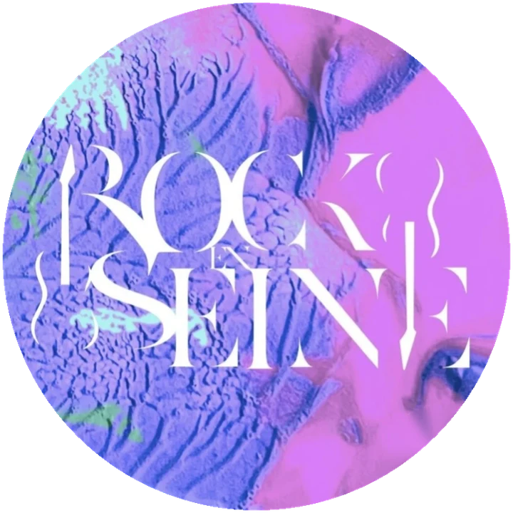
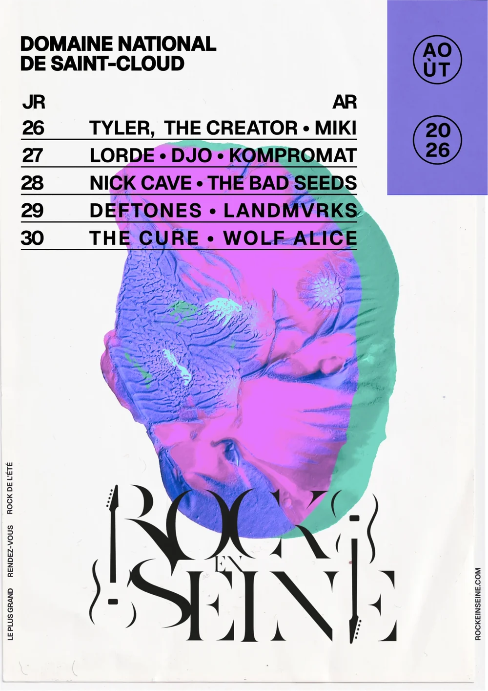
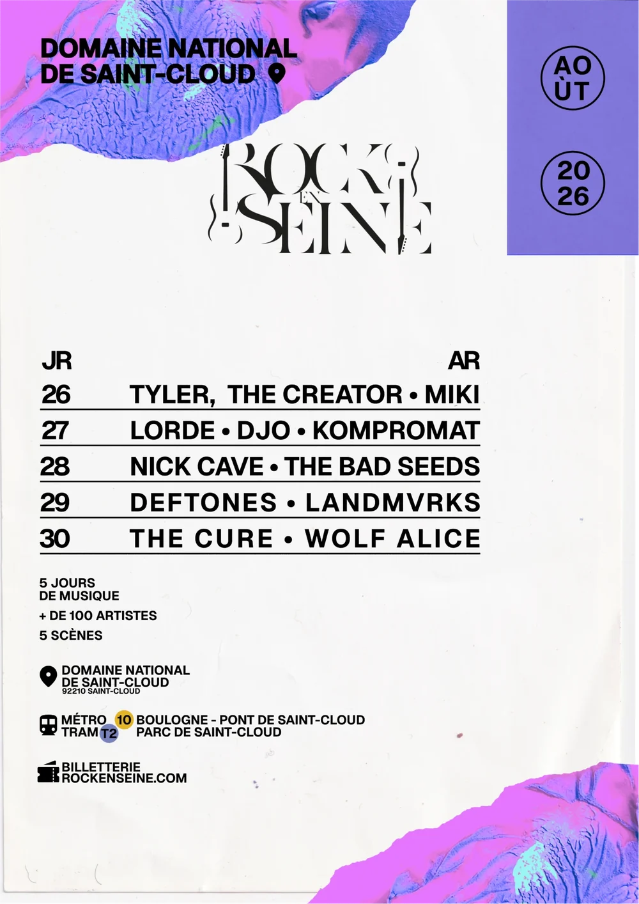
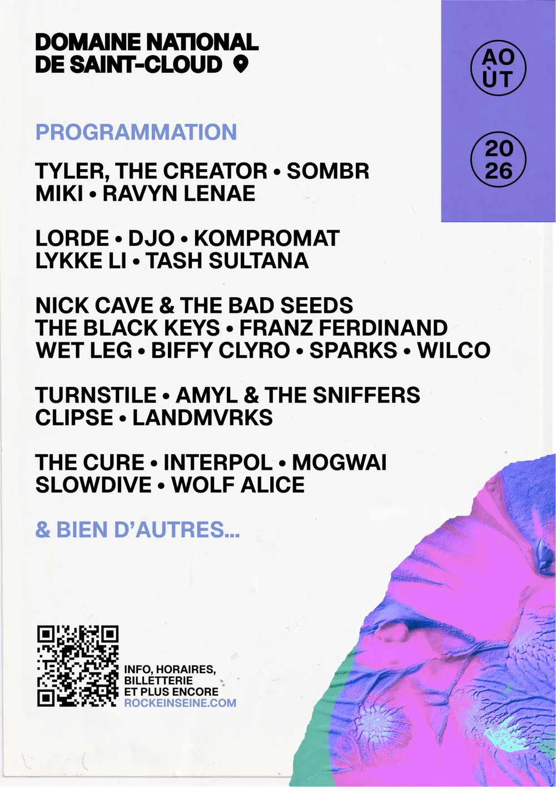
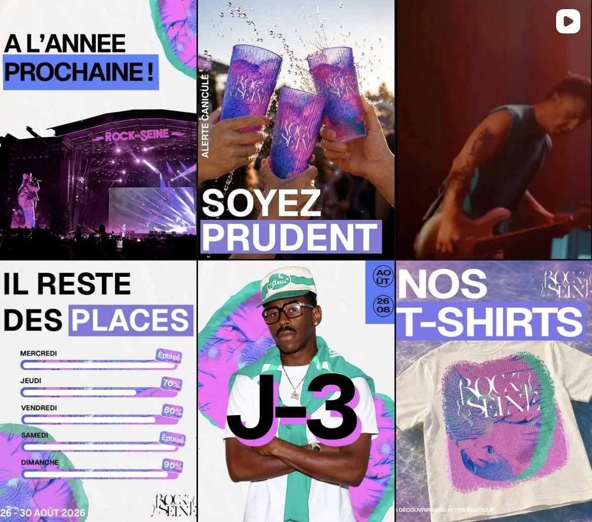
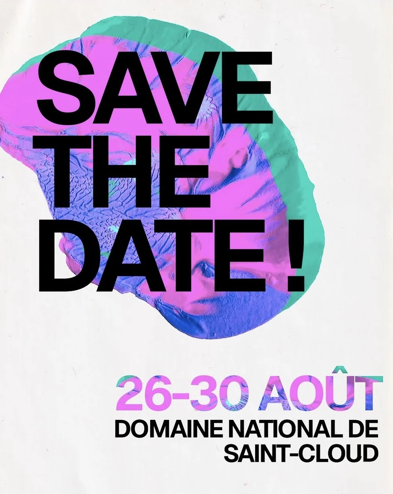
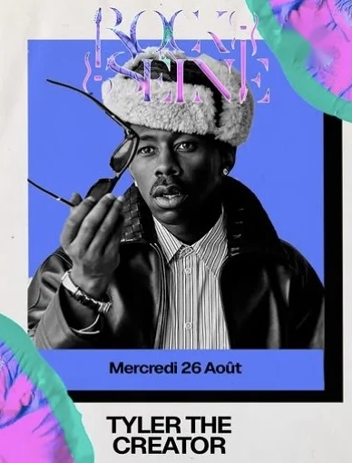
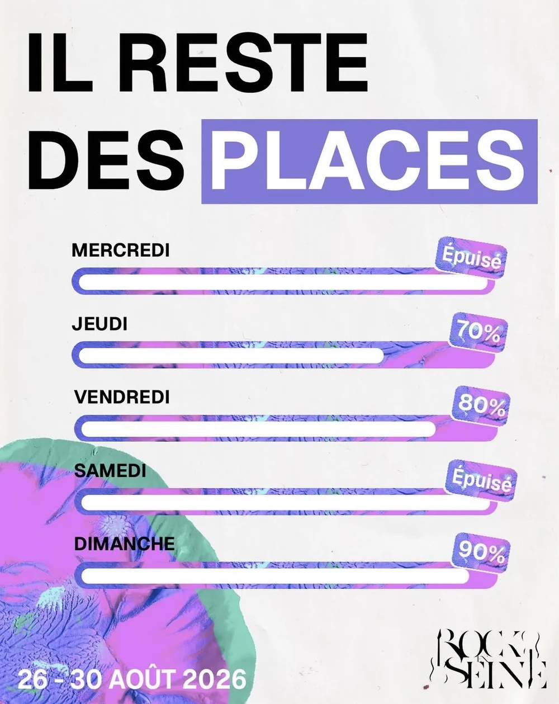
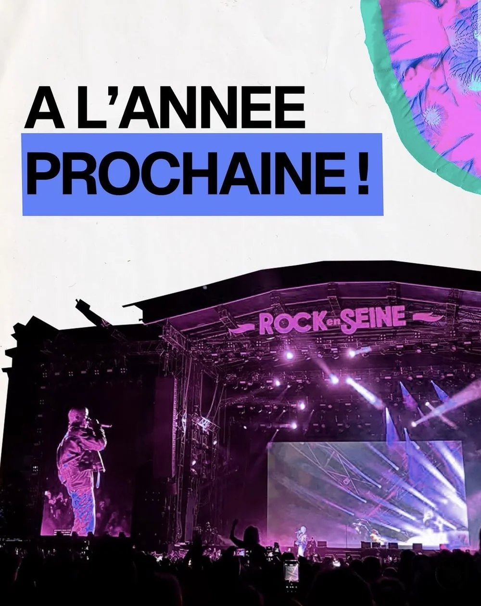

Universitaire
rock en seine
Une identité visuelle et ses supports pour l'édition 2026 du festival : affiche, flyer et campagne Instagram, de l'annonce des dates jusqu'au lendemain du dernier concert.
Projet étudiant réalisé à trois, sans lien officiel avec le festival.
le brief
En agence, prendre en charge la direction artistique et la production des supports de communication de l'édition 2026 de Rock en Seine, à partir d'une stratégie globale : une affiche, un flyer, des contenus pour les réseaux sociaux, un site vitrine et une vidéo teaser.
L'identité devait être forte et cohérente sur tous les supports, mais assez neutre pour embrasser tous les genres musicaux du festival sans en mettre un en avant. Les contenus sont ceux de la vraie édition 2026 : programmation, dates et textes.
mon role
J'ai réalisé les publications Instagram de la campagne, en respectant la direction artistique commune : textures, bandeaux de couleur, typographie et logo.

l'identite
Un logo typographique aux empattements effilés, où des manches de guitare se glissent dans le R et le E, et des textures fluides qui reviennent sur tous les supports sous forme de taches découpées. Les titres sont composés dans une linéale grasse en capitales, avec des bandeaux de couleur pour faire ressortir le mot important.
Pour rester neutre comme le demandait le brief, les textures sont abstraites plutôt que tirées de l'imagerie d'un style de musique : seules les guitares du logo rappellent le rock. La palette, vive et inattendue, parle à tous les publics du festival.
- rose
- bleu
- menthe
- papier
- noir
l'affiche et le flyer
La même grille sur les deux supports : le lieu en haut, le bloc « août 2026 » en violet et la programmation jour par jour.



la campagne
Ma partie du projet. Les publications suivent le festival dans l'ordre, pour garder le lien avec le public avant, pendant et après l'événement.
- avant Annoncer Save the date (26 – 30 août, Domaine national de Saint-Cloud) puis la programmation, artiste par artiste.
- les dernières semaines Faire venir Places restantes jour par jour, compte à rebours (J-3).
- pendant Accompagner Merchandising (t-shirts de l'édition) et prévention (alerte canicule).
- après Remercier « À l'année prochaine ! » avec une photo de la grande scène.




